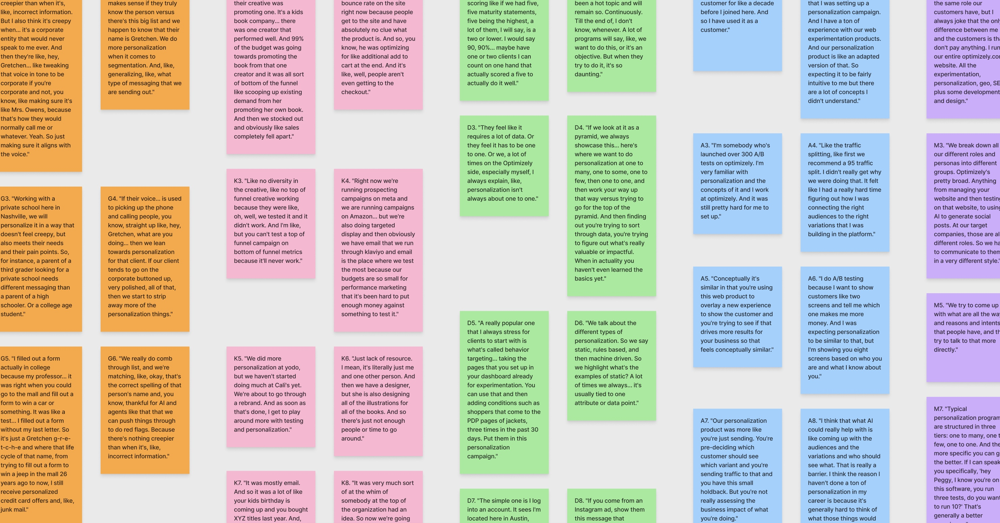
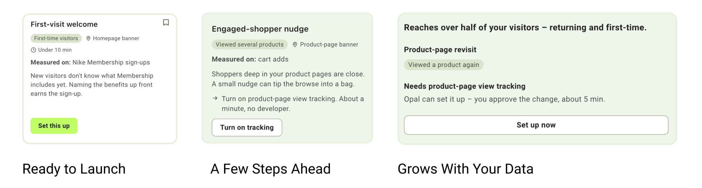
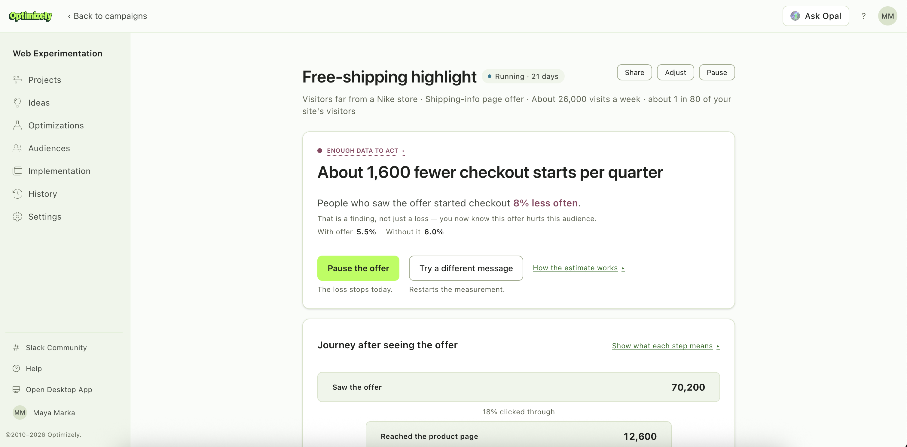
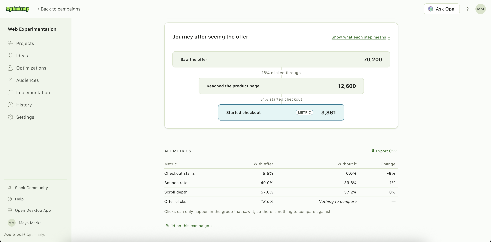

What is Optimizely?
Optimizely is a digital experience platform for A/B testing and website personalization. It sits between a company's marketing team and that company's customers, deciding which version of a page each visitor sees.
Alaska Airlines, Nike, Salesforce, Visa, and Zoom
Challenge
We were asked to design more agentic personalization features for Opal, Optimizely's AI platform, on the premise that personalization took too much manual work.
That premise did not survive research. We learned companies are buying personalization and almost none of them use it at all.
This was a reality for many customers:
A company buys the product. The new product is then given to a marketer. They open the tool, and find a blank canvas and a setup that needs a developer. This confuses the marketer, causing them to drift back to the A/B testing they already understand.
Only 10 or 20% of our customers who have personalization use it. They're paying for it, and they're just not using it.
Optimizely subject matter expert
An agent would have made a product nobody opened more capable. The challenge became convincing Optimizely to let us solve a different problem.
Solution
We took the evidence back to our advisors and pushed for closing the activation gap inside the product rather than building an agent on top of it. They agreed, and the project refocused.
OnRamp is a path through personalization, built for a marketer's entry to campaigns.
| What research found | What we built |
|---|---|
| Personalization was getting put off in favor of experimentation, despite experimentation and personalization building off one another. | A prompt on the experiments page marketers already frequent, carrying a drafted campaign in the dashboard. |
| Marketers thought they needed more data before they could start, but they actually needed more confidence to start with pre-existing data. | A picker that sorts every campaign by whether their current data can run it. |
| Results didn't tell them whether anything worked. | A results page that leads in plain language and says so when there isn't enough data yet. |
Impact
Optimizely came in believing personalization needed more automation, and left with evidence that what it needed was a different activation experience. We handed over a working prototype of the full flow and a PRD their engineering team could build from.
Refocusing the project established a foundation for Optimizely to address product adoption directly, establishing an entry point for users that directly targeted account retention and churn.
Research and Reframing the Brief
The team ran eleven interviews, six with subject matter experts inside Optimizely and five with marketers outside of it, some of them on competitors' tools, alongside desk research on Optimizely's existing products and the wider market. I ran 4 of the interviews and then led synthesis.

What the gap actually looked like
Personalization is the product with the widest distance between what customers say they want and what they ship. The reason for this sits between who buys it and who has to run it.
This disconnect happens every time:
A company signs the contract on a pitch about personalization at scale. The account is then handed off to an individual contributor — a growth marketer, webmaster, or team of one. Often they inherited the tool from a predecessor who left, leaving them with no context or an idea of why it matters.
What they find when they open the tool is a blank canvas asking them to define an audience, followed by a setup step that needs a developer to install code. The ticket goes into a queue, causing a stall in the process. Remembering they know a workaround with A/B testing, they drift back to the parts of Optimizely they already know and forget personalization exists.
Three findings
Personalization got postponed because it feels like a separate project.
A/B testing was simpler than personalization. Personalization felt like the next level that I was trying to… get to. There's just no time to think about "what's a really good personalization campaign we can be doing."
Marketer
It loses priority when it sits outside the workflow a team is already in. It is not competing with other features, it is competing with everything else on their list that week.
Marketers had usable data but believed they needed more.
What marketers said: "I don't have a customer data platform, so I can't do it."
What the product already did: geolocation, device type, new versus returning, referral source, and visit behavior — enough to define a segment and launch.
They were not missing data. They were missing confidence that what they had was enough to start.
The ones who ran something could not tell whether it worked.
I want to know how much juice I'm getting from the squeeze.
Marketer
They did not want more numbers. They wanted to know whether it worked and what to do next.
Changing the brief
We took our research back to Optimizely and argued that an agent would only add capability to a product customers were already walking away from, and that the gap worth closing was at the first campaign.
A marketer brand new to the business, where the old person who ran it left, and they're picking it up. That's so real for us. I can't think of a better persona.
Britt Hall, VP Product
They agreed, and the project refocused.
Build more agentic features for personalization
Close the activation gap in the product that exists
The three findings became three design decisions, and I worked on the two with the least product support behind them.
The Campaign Picker
Marketers stalled because they believed they needed a complete customer profile before they could start. This led to the fix to show them everything personalization can do.
I decided a full gallery makes it worse. Every campaign looks equally available, and none of them tell this marketer, with this data, what they can run today. The uncertainty that stopped them is still there, now with more options attached to it.
The problem I was solving was to give a marketer campaigns they can launch today, without making them understand their whole data setup first. So the picker sorts every campaign by what their data can actually support, and that is the first thing they see.

Ready to launch. Campaigns using pre-existing data that are ready to launch immediately.
A few steps ahead. Campaigns that are one or two data points away, with the missing piece named on the card. The marketer never has to work out whether their setup counts as complete.
Grows with your data. Campaigns that need something bigger, like product-page view tracking.
I went back and forth on whether this last group should exist, because if the argument is to start with what you have, then showing campaigns that need engineering work appears to contradict it. Hiding them does not remove the doubt, though, since a marketer who suspects there is a better version behind a wall they cannot see is back where they started. And the sort is not static, so as someone connects more data their campaigns move up a tier on their own.
When a campaign needs code, OnRamp writes the handoff, covering what to install, why it is needed, and a message the marketer can send straight to a developer. The ticket still has to be filed, but they are no longer the one who has to explain it.
The Results Page
My contribution here was the research. I ran the usability testing and worked out what marketers expect a results page to contain and how they expect it arranged.
The key insight emerged from our third research finding: A/B testing teaches marketers to expect statistically significant results, but personalization doesn't work that way. Without a single significance metric to rely on, the results page needed to clearly convey directional trends, show the volume of underlying data, and explicitly state when data was still insufficient.
This framing held up in usability testing. When participants encountered a flat result, instead of viewing it as a failure, they recognized it as a traffic issue and questioned why volume was low.


Reflection
My biggest takeaway was realizing how easy it is to fall into the trap of building more features when adoption stalls, when the real fix is often lowering the initial cost of entry. Personalization didn't fail because the platform lacked capability; rather, the high barrier to launching an initial campaign caused adoption to stall.
I also learned the importance of recognizing research limitations. Because we only had access to users who had already stalled, every pattern we uncovered explained why people give up rather than what drives long-term success. If I were to revisit this project, validating our assumptions against power users who successfully scaled personalization would be my priority.